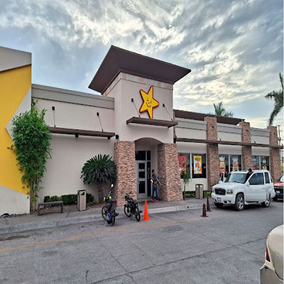
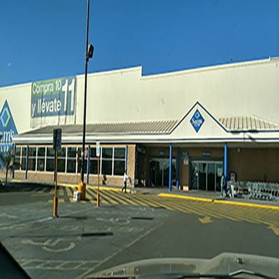
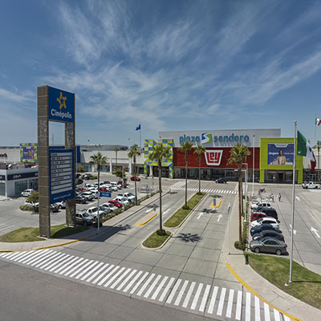

Carls junior

- El atractivo de este establecimiento es que sirve una gran variedad de hamburguesas de calidad, aparte de lo limpio del establecimiento y la buena atencion que se sirve, aparte del estacionamiento amplio y sus opciones variadas dentro del menu.
Sams Club

-
El atractivo de este supermercado es su alta gama de servicios y productos, manejandose principalmente por ventas de mayoreo y con un gran surtido de productos dentro de su catalogo, tanto modernos como de gran funcionamiento
Plaza Sendero

-
El atractivo de esta plaza es su gran cantidad de negocios y opciones disponibles de visitar, ademas de sus grandes instalaciones con un buen ambiente que termina dejandote con una gran experiencia en tu visita